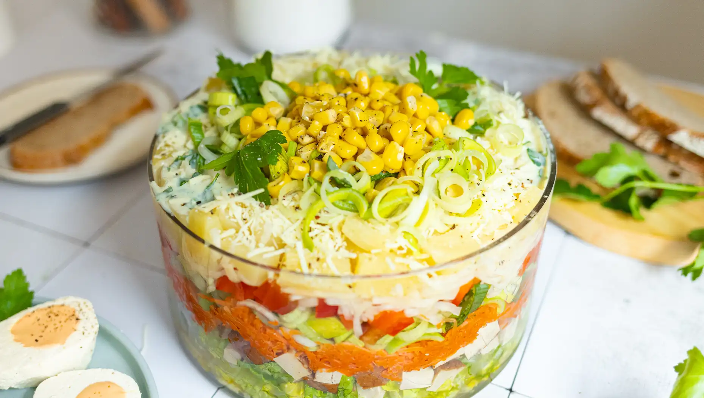

Schichtsalat
Zutaten
| 1 | Romana Salat |
| 1 | Stange Porree |
| 1 | Knoblauch |
| 1 | Paprika |
| 320 g | Selleriesalat |
| 490 g | Ananas |
| 190 g | Karottensalat |
| 330 g | Mais |
| 250 g | veganer Streukäse |
| 400 g | veganer Joghurt |
| Ananassaft | |
| Selleriesaft | |
| 3 EL | Senf |
| 2 TL | Knoblauchpulver |
| 20 g | Schnittlauch |
| Salz und Pfeffer | |
| 200 g | Tofu |
| 1 EL | Joghurt |
| 1 Prise | Kala Namak |
| gelbe Lebensmittelfarbe |
Zubereitung
- Salat, Porree und Paprika gründlich waschen. Salat und Porree anschließend in feine Streifen schneiden, Paprika würfeln. Den Räuchertofu in circa ein Zentimeter dicke Würfel schneiden. Selleriesalat und Ananas abtropfen lassen und den Saft auffangen. Dieser wird später für das Dressing verwendet. Mais abgießen.
- Für das Dressing veganen Joghurt (zwei Esslöffel für das Eigelb beiseitestellen), Ananassaft, Selleriesaft, Senf, Knoblauchpulver und fein gehackten Schnittlauch verrühren, salzen und pfeffern.
- In einer großen Schale nun nacheinander Salat, Räuchertofu, Karottensalat, Porree, Paprika, Selleriesalat, Ananas und Mais schichten. Das Dressing über den Salat geben und den veganen Käse darüberstreuen.
- Für die veganen Eier den restlichen Joghurt mit Kala Namak verrühren und mit gelber Lebensmittelfarbe einfärben. Aus dem Tofublock vier „Eierhälften“ ausschneiden und in der Mitte eine Vertiefung für das „Eigelb“ hinzufügen. Das „Dotter“ in die Vertiefung geben und die veganen Eier mit dem Salat servieren.